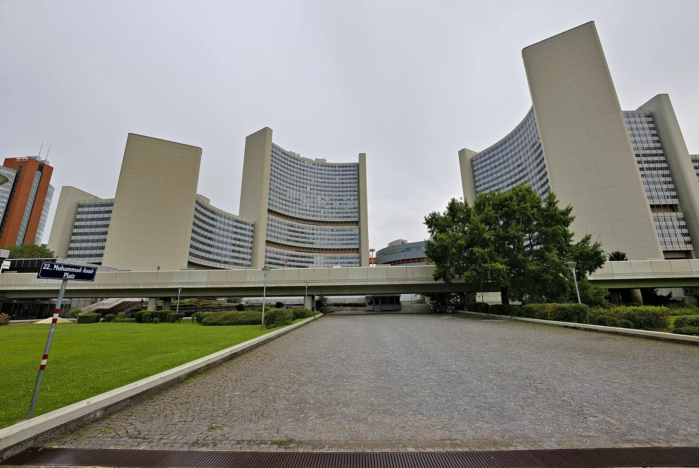
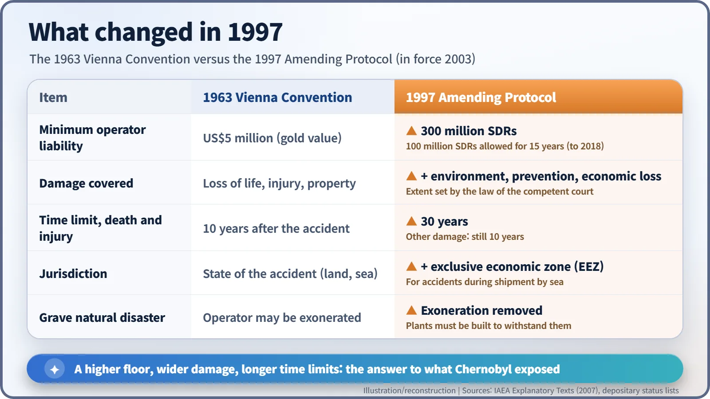
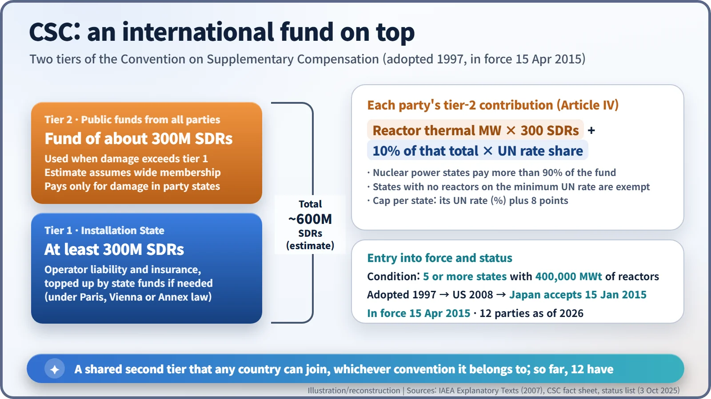

Nuclear History · 250
Sixty-Four Hands and a Mended Net — Modernizing Nuclear Liability: the 1997 Vienna Protocol and the CSC
After Chernobyl exposed a hole in the safety net for nuclear accident victims, seven years of talks in Vienna produced a higher floor of 300 million SDRs and a shared international fund that any country can join.
On 12 September 1997 a diplomatic conference in Vienna adopted two instruments that rebuilt the international safety net for nuclear accident victims after Chernobyl: a Protocol amending the 1963 Vienna Convention and a new Convention on Supplementary Compensation for Nuclear Damage (CSC). The Protocol raised the minimum operator liability to 300 million SDRs and widened what counts as damage; the CSC added a shared second tier of public money open to every country. It took until 2015 for the CSC to enter into force, and it still has only 12 parties.
Sixty-four hands in Vienna
Vienna, 12 September 1997. On the last day of a five-day diplomatic conference, delegates voted by a show of hands. One text passed by 64 votes to 1, with 2 abstentions. The other passed by 66 to 1, with 2 abstentions. The two documents were the Protocol to Amend the Vienna Convention on Civil Liability for Nuclear Damage and a brand-new treaty, the Convention on Supplementary Compensation for Nuclear Damage, usually shortened to the CSC. [1]
The titles are dry, but the job was closer to mending a net. The international safety net meant to catch the victims of a nuclear accident had been shown to have a large hole in it, and the conference set out to re-tie the knots and make the mesh tighter.

Two holes that Chernobyl exposed
The hole was exposed on 26 April 1986 at Chernobyl. Radioactive contamination crossed borders, but the country where the accident happened, the Soviet Union, was not party to any nuclear liability convention. According to the IAEA's explanatory texts, it regretted the consequences of the accident but "denied that it had any international legal obligations in that respect". [1]
The IAEA later summed up the lesson as two problems. The first was getting far more countries inside the liability system. The second was making that system strong enough for a major accident whose effects spill across frontiers. The rules of the early 1960s had been a compromise between protecting victims and nurturing a young industry; by the late 1980s, the IAEA notes, world public opinion had come to see the protection of victims as "the primary objective". A 1988 Joint Protocol had already linked the two existing regimes, the Paris and Vienna conventions, but that was only a first patch.
Seven years, seventeen sessions
On 21 February 1990 the IAEA Board of Governors set up a Standing Committee on Liability for Nuclear Damage, open to every member state. Between 1990 and 1997 it met in seventeen sessions. The hardest question was "state liability": should the country where an accident happens be liable under international law in its own right? The IAEA's account says this issue "met with serious difficulties", so the negotiators set it aside and concentrated on two tracks: revising the Vienna Convention, and creating a pot of supplementary money that countries would fill together. [1]
The United States was another puzzle. It belonged to neither the Paris nor the Vienna regime and handled accident compensation under its own Price-Anderson Act. The negotiators wrote in a so-called "grandfather clause" so that the US could join without rewriting its domestic law. [1] [7]
The Protocol: a higher floor, a wider net
The 1997 Protocol kept the backbone of the Vienna system: the operator of a nuclear installation is liable without proof of fault, and liability is channelled to the operator alone. What it changed were the numbers and the reach.

The minimum operator liability rose from US$5 million, pegged to gold, to 300 million Special Drawing Rights. SDRs are the International Monetary Fund's unit of account, built from a basket of currencies. A transitional minimum of 100 million SDRs was allowed for 15 years after entry into force, until 2018. The definition of nuclear damage was widened to spell out the costs of restoring a damaged environment, the costs of preventive measures and certain economic losses, to the extent allowed by the law of the competent court. Preventive measures count even if no radiation is actually released, as long as they respond to a grave and imminent threat. [1]
Because radiation injuries can take decades to appear, the time limit for claims for death and personal injury was extended from 10 to 30 years; other claims keep the 10-year limit. To cover shipments of nuclear material at sea, the courts of a coastal state were given jurisdiction over accidents in its exclusive economic zone. And the old exemption for "a grave natural disaster of an exceptional character" was deleted, on the reasoning that nuclear installations should be built to withstand such disasters. [1]
The CSC: a second layer for everyone
The CSC works differently. It is a stand-alone treaty that any country can join: Paris members, Vienna members, and countries in neither camp, provided their national law follows the basic principles set out in an annex. [5]

The first tier belongs to the country where the liable installation sits: it must make at least 300 million SDRs available for compensation. If the damage is bigger, the second tier opens and every party contributes public money by formula. Each country pays 300 SDRs for every megawatt of thermal power from its nuclear reactors, and a further amount equal to 10% of that total is shared out according to United Nations rates of assessment. The negotiators' first draft had proposed 350 SDRs per megawatt, but several delegations thought that too high. As a result, more than 90% of the money comes from nuclear power states. Assuming wide membership, the IAEA estimated the fund at about 300 million SDRs, for a total of roughly 600 million SDRs. Second-tier money pays only for damage suffered in party states. [1] [5]
A seventeen-year wait
The Protocol entered into force on 4 October 2003, three months after Belarus deposited the fifth instrument of ratification. In September that year the IAEA also set up an International Expert Group on Nuclear Liability (INLEX) to promote the new instruments. [1] [2]
The CSC had a higher bar. It needed at least five countries with a combined 400,000 megawatts of installed thermal capacity, so that a handful of states would not end up carrying the whole fund. The United States wrote implementing rules into the Energy Independence and Security Act of 2007 and ratified on 21 May 2008; under that law, the US share of any second-tier payment is to be paid by suppliers of nuclear equipment and services. [3] [6]
The final piece was Japan. In November 2013 its foreign minister said Japan would join the CSC "so as to provide an environment that facilitates involvement of foreign companies with expertize regarding the decommissioning and contaminated water measures of the Fukushima Daiichi nuclear power plant". Japan deposited its acceptance on 15 January 2015, the threshold was met, and the CSC entered into force on 15 April 2015, seventeen years and seven months after adoption. [3] [7]
Gaps still in the mesh
According to the IAEA's depositary lists, the Protocol now has 17 parties and the CSC 12. In October 2025 the United Kingdom became the first Paris Convention state to join the CSC. On 13 January 2026 a diplomatic conference adopted an amendment that removes the obligation for countries with no nuclear reactors to contribute public funds, an attempt to make joining easier for them; it will take effect only once every existing party has ratified it. South Korea is party to neither instrument and handles compensation under its own national law. [2] [3] [4] [7]
It is worth stressing that 300 million SDRs is a floor, not a common ceiling: Germany, for instance, imposes unlimited liability on its operators. The 1997 net was not a finished product. It was one stage in a net that has been re-knotted after each accident by asking the same question: who was left outside?